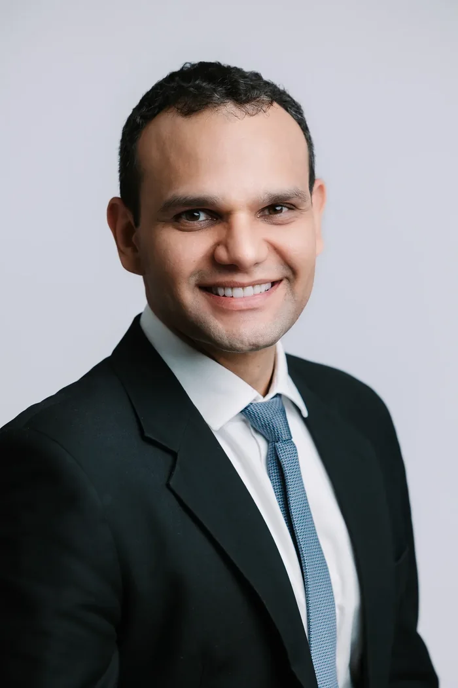

Corpo
Hipócrates já cuidava do modo de viver do paciente. Hoje isso tem nome, medicina do estilo de vida, e se acompanha com evidência: pressão, colesterol, sono e movimento.
Consultas particulares de 1h a 1h30, na Medicina Cardeal, Asa Sul, ou por telemedicina.
Role a página
Pular a aberturaÁreas de interesse: cardiologia preventiva, medicina do estilo de vida e longevidade com evidência
Vinde, Espírito Santo, enchei os corações dos vossos fiéis e acendei neles o fogo do vosso amor.
CRM-DF 19878 · RQE 15628 (Cardiologia) · RQE 13972 (Clínica Médica)
São dez anos de UTI, desde 2016. Ali vi onde termina a doença do coração. Hoje trabalho para que ela não comece.
Uma consulta particular de 1h a 1h30, pautada na medicina do estilo de vida, em quatro etapas.
Sintomas, doenças, remédios, exames e a saúde da sua família.
Os que se aplicam ao seu caso, respondidos durante a consulta.
Alimentação, atividade física, sono, estresse, relacionamentos e uso de álcool, tabaco e outras substâncias.
No fim da consulta, você recebe o Mapa da Saúde: onde você está hoje e por onde começar.
Quem quiser seguir comigo depois da primeira consulta pode aderir ao acompanhamento contínuo. Entre em contato para mais informações.
Músculo, ritmo, pressão, artérias. Trato com ciência, diretrizes e só os exames que podem mudar o seu tratamento.
Na tradição clássica, o coração é o centro da pessoa, onde razão, vontade e afeto se encontram.
A medicina mede o que o coração faz. A filosofia pergunta para que ele bate. Eu não abro mão de nenhuma das duas.
Na consulta, as duas camadas entram: os seus exames e o modo como você vive.
Hipócrates já cuidava do modo de viver do paciente. Hoje isso tem nome, medicina do estilo de vida, e se acompanha com evidência: pressão, colesterol, sono e movimento.
Desde Aristóteles, aprendemos a pensar com ordem. A conduta clínica precisa de uma razão que se possa explicar.
Viktor Frankl mostrou que o ser humano busca sentido, e sentido também importa para a saúde. Por isso, consultas longas, que respeitam a pessoa por inteiro e deixam tempo para todas as suas dúvidas.
Fé e razão não se contradizem, como ensinou Tomás de Aquino. Todo paciente é acolhido como irmão.

“Fizeste-nos para ti, e inquieto está o nosso coração enquanto não repousa em ti.”Santo Agostinho, Confissões, livro I, cap. 1
Sou cardiologista e sou cristão.
A fé não substitui o diagnóstico, mas nenhum diagnóstico basta para explicar uma pessoa.
No Instagram, explico em linguagem simples o que a ciência diz sobre prevenção, exames e estilo de vida.
Café, sono ruim e estresse explicam muitas palpitações. Mesmo assim, o coração precisa ser avaliado primeiro.
Ver no InstagramPor que uma placa pequena, que não aparece no exame de rotina, pode causar um infarto.
Ver no InstagramO treino de força também entra na prevenção cardiovascular, não só o aeróbico.
Ver no InstagramO que é essa área de atuação médica e quais são os seus seis pilares.
Ver no InstagramConsultas particulares na Medicina Cardeal, na Asa Sul, ou por Telemedicina.